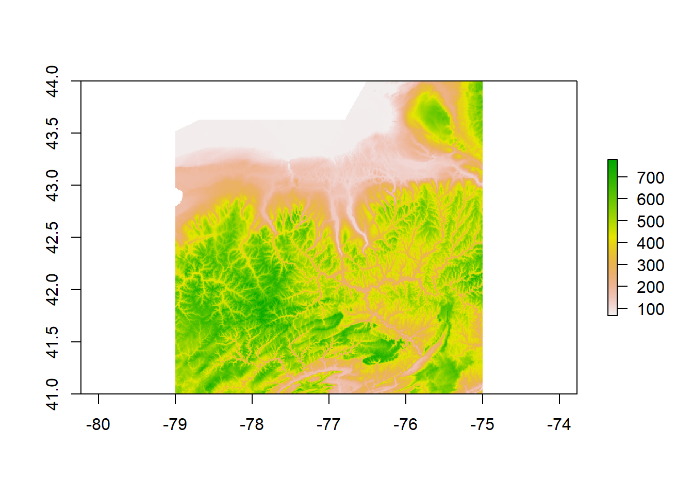

Dilineating Sub-Watersheds of the Finger Lakes Region, NY
Topographical and Land-Use Diversity of the Finger Lakes
Gillian Schwert
Introduction
Cyanobacteria, or blue-green algae, are actually a type of photosynthetic prokaryotes (Wiegand et al., 2005) that are capable of producing myriad types of secondary metabolites, many of which have been identified as strong cyanotoxins (Blaha et al., 2009). These cyanotoxins can be classified into five categories, including hepatotoxins (affecting the liver), neurotoxins (affecting the brain), cytotoxins (affecting cells), dermatotoxins (affecting the skin), and irritant toxins (Wiegand et al., 2005). With the most extreme cases of exposure ending in death, having an understanding of the factors that contribute to cyanobacterial vigor is incredibly important in protecting the health of people living near affected waters.
One important factor that has led to an increase in the observation of cyanobacterial bloom is the widespread increase in anthropogenic eutrophication, a state of excessive nutrient load in a waterbody caused largely by human land use practices (Blaha et al., 2009). As agriculture and urbanization expand, the increase of land impermeability coupled with the increase in nutrient-rich lands leads to an increased amount of surface runoff. This surface runoff carries nutrients from the land to the water, leading to these eutrophic conditions that favor excessive plant and algae growth. According to a 1999 estimate by Bartram et al., over 40% of lakes and reservoirs have become eutrophic, presenting ideal conditions for widespread cyanobacterial bloom. An updated proportion would most assuredly be much higher almost twenty years later.
In addition to the increase in anthropogenic eutrophication, global climate change also plays a large part in the increased burden of cyanobacterial bloom (Blaha et al., 2009). To put it simply, when the weather is hot and calm and nutrient levels are high, more widespread cyanobacterial bloom is expected (NYSDEC, 2017). These cyanobacterial preferences are troubling since scientists widely agree that temperatures will continue to increase for decades to come due to the anthropogenic production of greenhouse gases that have made themselves at home in the atmosphere (NASA, 2017). Forecasted temperatures demonstrate a probable increase in temperature by 2.5 to 10 degrees Fahrenheit in the next century, offering ideal conditions for cyanobacteria to thrive (NASA, 2017).
In New York State, citizens and government bodies understand all too well how cyanobacteria are finding increased amount of success in water bodies across the state. The New York State Department of Environmental Conservation has a webpage dedicated to the monitoring of harmful algal blooms, relying on information gathered from the DEC Lake Classification and Inventory Program, the Citizen Statewide Lake Assessment Program volunteers, and public reports using the Suspicious Algal Bloom Report form (NYSDEC, 2017). According to the archived data from 2012-2016, suspicious blooms increased from 19 to 41, confirmed blooms increased from 29 to 95, and highly toxic blooms increased from 9 to 37 (NYSDEC HAB Program Archive Summary, 2016).
The Finger Lakes represent 11 of of New York State’s monitored water bodies, all near to one another in geographical space and yet all impacted to varying degrees by cyanobacteria.
library(readr)
Lake_Summary_1 <- read_csv("C:/Users/gills/Desktop/Geo503_R/FinalProjectR/RDataScience_Project/Lake_Summary_1.csv")## Parsed with column specification:
## cols(
## Lake = col_character(),
## Latitude = col_double(),
## Longitude = col_double(),
## `Elevation (ft)` = col_integer(),
## `Surface_Area (acres)` = col_integer(),
## `Max Depth (ft)` = col_integer(),
## Class = col_character(),
## `Bloom 2012 (wks)` = col_integer(),
## `Bloom 2013 (wks)` = col_integer(),
## `Bloom 2014 (wks)` = col_integer(),
## `Bloom 2015 (wks)` = col_integer(),
## `Bloom 2016 (wks)` = col_integer()
## )View(Lake_Summary_1)So if these lakes are so similar in geography, topography, and use, why are they impacted so disparately by cyanobacteria? For this project, we will seek to answer that question by looking into land use. Specifically, this project will seek to quantify the proportion of each lake’s watershed that can be categorized as agricultural land. It is hypothesized that lakes with a higher proportion of agricultural land will have higher nutrient loads and will therefore face higher burdens of cyanobacterial bloom.
Materials and methods
In order to quantify the ratio of agricultural land for each lake’s watershed, we first have to dilineate the boundaries between the lakes’ watersheds.
We’re going to use the ‘rgrass7’ package in order to call on the GRASS program from within R. In this way, we can use the watershed tools already built into GRASS in order to help with the watershed delineation.
The dat we will use to perform this watershed delineation is 1 arc-second DEM data that can be freely downloaded by anyone from USGS’ National Map database.
First let’s find the elevation data that we need!
library(sp)
library(raster)
library(rgdal)## rgdal: version: 1.2-8, (SVN revision 663)
## Geospatial Data Abstraction Library extensions to R successfully loaded
## Loaded GDAL runtime: GDAL 2.0.1, released 2015/09/15
## Path to GDAL shared files: C:/Users/gills/Documents/R/win-library/3.4/rgdal/gdal
## Loaded PROJ.4 runtime: Rel. 4.9.2, 08 September 2015, [PJ_VERSION: 492]
## Path to PROJ.4 shared files: C:/Users/gills/Documents/R/win-library/3.4/rgdal/proj
## Linking to sp version: 1.2-5library(XML)
library(RArcInfo)## Loading required package: RColorBrewerlibrary(rgrass7)## Warning: package 'rgrass7' was built under R version 3.4.2## GRASS GIS interface loaded with GRASS version: (GRASS not running)datadir='C:/Users/gills/Desktop/Geo503_R/FinalProjectR/RDataScience_Project/data'
USA=getData('GADM',country='USA',level=0,path=datadir)
dem_FL=getData('alt',country='USA',lat=42.72,lon=-77.05,path=datadir,download=T)## returning a list of RasterLayer objectsdem_cont_USA=dem_FL$`C:/Users/gills/Desktop/Geo503_R/FinalProjectR/RDataScience_Project/data/USA1_msk_alt.grd`
dem_roi=crop(dem_cont_USA,extent(-79,-75,41,44),filename=file.path(datadir,"dem_flr.tif"),overwrite=T)
plot(dem_roi)
Load any required packages in a code chunk (you may need to install some packages):
library(dplyr)
library(ggplot2)
library(maps)
library(spocc)
knitr::opts_chunk$set(cache=TRUE) # cache the results for quick compilingWe are going to use the occ() function to download occurrence records for the American robin (Turdus migratorius) from the Global Biodiversity Information Facility.
 Licensed under CC BY-SA 3.0 via Wikimedia Commons
Licensed under CC BY-SA 3.0 via Wikimedia Commons
{kind=link}
## define which species to query
sp='Turdus migratorius'
## run the query and convert to data.frame()
d = occ(query=sp, from='ebird',limit = 100) %>% occ2df()This can take a few seconds.
# Load coastline
map=map_data("world")
ggplot(d,aes(x=longitude,y=latitude))+
geom_polygon(aes(x=long,y=lat,group=group),data=map)+
geom_point(col="red")+
coord_equal()
Map illustrating the known occurrence locations
Results
Show tables, plots, etc. and describe them.
summary(d)## name longitude latitude prov
## Length:100 Min. :-98.67 Min. :32.38 Length:100
## Class :character 1st Qu.:-82.17 1st Qu.:38.92 Class :character
## Mode :character Median :-75.73 Median :40.78 Mode :character
## Mean :-77.93 Mean :40.20
## 3rd Qu.:-73.30 3rd Qu.:42.20
## Max. :-68.31 Max. :46.32
## date key
## Min. :2017-11-05 Length:100
## 1st Qu.:2017-11-05 Class :character
## Median :2017-11-05 Mode :character
## Mean :2017-11-05
## 3rd Qu.:2017-11-05
## Max. :2017-11-05Conclusions
What have you learned? Are there any broader implications?